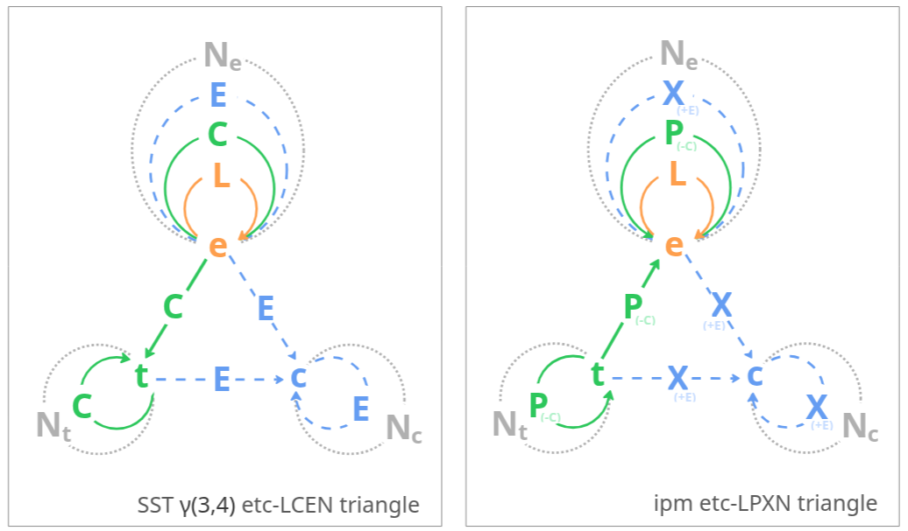

This doc explains the two label changes IPM makes on top of Mark Burgess's original Semantic Spacetime γ(3,4) — and why. For the main IPM modeling introduction, see the README.
IPM is built directly on Mark Burgess's Semantic Spacetime γ(3,4) ("gamma 3, 4" — three kinds of nodes, four kinds of relations). IPM tweaks two of the original SST labels for readability:

car --C--> engine — the car spatially encloses the engine) becomes IPM's part-of (engine --P--> car). Containment in SST is a spatial property — a ring drawn around a region, not a generic hierarchy. The graph is the same; we prefer "part-of" because it reads naturally for participation ("Patrick is part of the swap event"), and the arrow then points from the small thing toward its larger spatial container.E next to e is easy to mis-read; X next to e is not.)L (leads-to) and N (near-to) keep their SST names. So the IPM mnemonic for the four edges becomes LPXN, in place of SST's LCEN.
semantic.st project home for the broader SST framework.